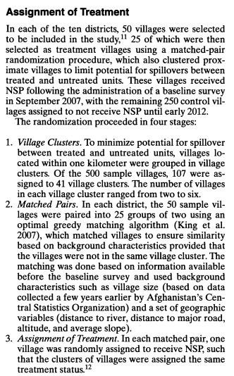

library(foreign)
wom <- read.dta("data/karpetal.dta")7 Field Experiments
In this section, we discuss field experiments, which will also allow us the opportunity to discuss the use of non-standard standard errors in experiments and issues around compliance in the receipt of experimental treatments.
Our resources for this sections include
- Gerber and Green Chapters 3.6, 5, and 6
- Applications
- Karpowitz, Christopher, Quin Monson and Jessica Preece. 2017. “How to Elect More Women: Gender and Candidate Success in a Field Experiment.” American Journal of Political Science. DOI: 10.1111/ajps.12300
- Broockman, David and Josh Kalla. 2016. “Durably reducing transphobia: A field experiment on door-to-door canvassing.” Science 352(6282): 220-24.
- Siegel, Alexandra., & Vivienne Badaan. (2020). #No2Sectarianism: Experimental Approaches to Reducing Sectarian Hate Speech Online. American Political Science Review, 114(3), 837-855. doi:10.1017/S0003055420000283
7.1 Field Experiment Application
Karpowitz, Monson, and Preece (2017), “How to Elect More Women: Gender and Candidate Success in a Field Experiment.”
prop_sd_fem2014: proportion of state delegates who are womencondition: the treatment condition in which precincts were assigned: Control, Supply, Demand, or Supply + Demandcountythe county in which precincts were located
What was their research question? What is \(Y_i(1)\)? What is \(Y_i(0)\)?
- Why is this considered a field experiment?
Let’s load the data and replicate the results in Table 3, column 1 of the paper.
Let’s look at the treatment conditions
## Treatment indicator
table(wom$condition)
Control Supply Demand Supply+Demand
453 470 446 443 class(wom$condition)[1] "factor"## Dependent variable
summary(wom$prop_sd_fem2014) Min. 1st Qu. Median Mean 3rd Qu. Max.
0.000 0.000 0.000 0.263 0.500 1.000 We can now estimate the treatment effects. Note: We want to compare each treatment condition to the control condition. How should we do this?
- We could conduct individual
t.testfunctions for each pairwise comparison. - Alternatively, if we use regression, we can interpret each coefficient estimate as that difference in means between the treatment condition and the category left out of the regression.
## Regression approach
r1 <- lm(prop_sd_fem2014 ~ condition, wom)
round(summary(r1)$coefficients, digits=4) Estimate Std. Error t value Pr(>|t|)
(Intercept) 0.2457 0.0167 14.7226 0.0000
conditionSupply 0.0149 0.0234 0.6381 0.5235
conditionDemand 0.0150 0.0237 0.6335 0.5265
conditionSupply+Demand 0.0396 0.0237 1.6692 0.0953Note how the Control category is left out. We can interpret each coefficient estimate as the difference in the proportion of delegates who are female between the Control condition and corresponding other condition. In this regression, we can also interpret the Intercept as the value our dependent variable takes when all of the other variables are 0 (i.e., when we are in the control condition). Before we interpret the significance of these effects, let’s take a closer look at the design.
7.2 Clustering standard errors
Often, we draw a sample of independent observations where randomization occurs at the level of the individual unit. But, sometimes we have multiple observations per unit (e.g., multiple observations of a particular individual, multiple individuals in a household)
- Example: In Karpowitz et al., precincts are nested within counties. As footnote 15 notes, “The state party relies heavily on county-level party officials to organize and run the neighborhood caucus meetings.”
- Consequence: our observations are no longer independent.
- Solution: we must account for this in estimates of uncertainty.
- We are going to “cluster” our standard errors by county
It used to be pretty difficult to do this in R, but over the last few years, people have developed packages to integrate clustering into the standard functions for regression. We will use the package estimatr in this way.
install.packages("estimatr")Its primary function is lm_robust reflecting its easy integration of different types of “robust” standard errors.
library(estimatr)
r1.cluster <- lm_robust(prop_sd_fem2014 ~ condition, wom,
se_type="stata", clusters = county)
round(summary(r1.cluster)$coefficients, digits=4) Estimate Std. Error t value Pr(>|t|) CI Lower CI Upper
(Intercept) 0.2457 0.0146 16.8311 0.0000 0.2158 0.2756
conditionSupply 0.0149 0.0155 0.9639 0.3433 -0.0168 0.0466
conditionDemand 0.0150 0.0214 0.7012 0.4890 -0.0288 0.0589
conditionSupply+Demand 0.0396 0.0160 2.4805 0.0194 0.0069 0.0723
DF
(Intercept) 28
conditionSupply 28
conditionDemand 28
conditionSupply+Demand 28Note how the coefficient estimates remain unchanged, but the size of the standard errors, and therefore, the corresponding t-values and p-values also change.
7.2.1 Adjusting p-values
Another thing we might note about this test is that we are conducting three hypothesis tests simultaneously. This might bring up issue related to multiple comparisons problems. Some of the figures that the authors present include a “Bonferroni” adjustment to the conventional significance levels. When we have multiple hypothesis tests, this can rapidly increase the possibility that we observe at least one significant result, particularly if we assume the tests are independent:
\[\begin{align*} Pr(\text{at least one significant result}) &= 1 - Pr(\text{no significant result})\\ &= 1 - (1 - 0.05)^{\text{number of tests}} \end{align*}\]With 3 tests, you have a 14% chance of observing at least one significant result even if all are not significant.
1 - (1 - 0.05)^3[1] 0.142625We can make an adjustment that makes it harder for us to conclude a result is significant under multiple comparisons. See EGAP’s resource.
Here are some examples of adjustments using the p.adjust function.
## extract p-values from the regression
pvals <- summary(r1.cluster)$coefficients[2:4, 4]
pvals conditionSupply conditionDemand conditionSupply+Demand
0.34334883 0.48898188 0.01939968 ## bonferroni-- very conservative
p.adjust(pvals, method="bonferroni") conditionSupply conditionDemand conditionSupply+Demand
1.00000000 1.00000000 0.05819905 The manual approach.
## manual (p-vals over 1 switch to 1)
m <- 3 # number of tests
pvals * 3 conditionSupply conditionDemand conditionSupply+Demand
1.03004649 1.46694564 0.05819905 ## holm
p.adjust(pvals, method="holm") conditionSupply conditionDemand conditionSupply+Demand
0.68669766 0.68669766 0.05819905 The manual approach.
## manual-- requires pval sorting
m <- 3 # number of tests
i <- 1:3 # sequence of rankings
cummax((m + 1 - i) * sort(pvals))conditionSupply+Demand conditionSupply conditionDemand
0.05819905 0.68669766 0.68669766 As you read papers, take note of whether authors make these types of adjustments. There are different philosophies about when one must account for multiple comparisons.
7.2.2 Additional complex sampling designs
Clustered random assignment
Sometimes we go so far as to assign treatment by cluster (e.g., by household, village, school)
- Consequence: our observations are no longer independent.
- Solution: we must account for this in estimates of uncertainty.
- Caution: if cluster size is correlated with potential outcomes, can bias ATE. See Gerber and Green (2012, 83).
- Caution: clustered random assignment can increase uncertainty by decreasing the degrees of freedom (you use this when calculating the p-value from the t distribution)
Why cluster if clustering is not ideal?
Blocking
Sometimes we assign randomization within specific subgroups instead of at the individual level (Example: Karpowitz et al. replication experiment, pg. 12, where they randomize treatment in their survey experiment by respondent gender and by whether the respondent was from the state above or below average in female representation among Republican state legislators.)
- Ensures balance across conditions within (blocked) subgroups
- Relatedly, avoids need for additional covariate adjustment
- Facilitates subgroup analysis by suggesting that is is particularly important to have balance within these subgroups
- Sometimes improves precision of estimates
- Caution:
- Affects how to calculate ATEs if assignment probabilities differ by block) See Gerber and Green Chapter 4.5.
- Affects calculation of SEs!! See Gerber and Green pgs. 73-74
Matched Pairs
Matched pairs is a special case of blocking. We find two units OR two clusters of units that are most closely “matched” on pre-treatment covariates
- Can use matching algorithms to do this
- Assign treatment randomly at the pair level, i.e., coin flip as to which unit in the pair receives treatment
- Caution: Must take this design into account in analysis. See Gerber and Green (2012, 77)
For an experimental application with matched pairs, see “Empowering Women through Development Aid: Evidence from a Field Experiment in Afghanistan” by Andrew Beath, Christia Fotini, and Ruben Enikolopov publised in The American Political Science Review in 2013. The screenshot below describes the matched pairs process. In the caption of their table of results, they describe how they accounted for matched pairs in the regression.
 
7.3 Compliance
An issue with all experimental designs, but particularly field experiments, is compliance, which refers to whether respondents received the treatment as assigned.
Do subjects assigned to treatment receive treatment?
- Encouragement design: Treatment assignment might only “encourage” receipt of treatment, is an intent-to-treat
- Note how Karpowitz et al. label Table 3 as “Intent-to-Treat” effects
- Compliance refers to whether receipt of treatment aligns with assignment to treatment
- One-sided non-compliance: some individuals assigned to treatment don’t receive treatment failure-to-treat
- Two-sided non-compliance: possibility of both failure-to-treat and that those not assigned to treatment, receive treatment
In the Karpowitz et al. article, what might cause issues with compliance?
7.3.1 Notation for Compliance
Let \(d_i(z)\) be the actual treatment status of unit i where \(z\) is the experimental assignment.
- Practice: what does \(d_i(1) = 0\) mean, in words?
When everyone assigned to treatment receives the treatment \(d_i = z_i\).
We can break subjects into four types based on their compliance: \[\begin{align*} \mbox{Compliers: } &d_i(1)=1; d_i(0)=0 \\ &\implies Y_i(d_i(1)) - Y_i(d_i(0)) = Y_i(1) - Y_i(0) \\ \mbox{Always takers: } &d_i(1)=1; d_i(0)=1 \\ &\implies Y_i(d_i(1)) - Y_i(d_i(0)) = Y_i(1) - Y_i(1) \\ \mbox{Never takers: } &d_i(1)=0; d_i(0)=0 \\ &\implies Y_i(d_i(1)) - Y_i(d_i(0)) = Y_i(0) - Y_i(0) \\ \mbox{Defiers: } &d_i(1)=0; d_i(0)=1 \\ &\implies Y_i(d_i(1)) - Y_i(d_i(0)) = Y_i(0) - Y_i(1) \end{align*}\]
What does \(ATE|d_i(1) > d_i(0)\) mean, in words?
With full compliance ATE = ITT. With non-compliance, our standard estimation of the treatment effect is now the ITT.
- Where we estimate \(ITT_i = Y_i(z = 1) - Y_i(z=0)\)
- Example: Karpowitz et al. stick with the ITT
- With assumptions, we may be able to identify and estimate the Complier Average Causal Effect, the average treatment effect just among compliers.
7.3.2 Complier Average Causal Effect
\(CACE = E[Y_i(d = 1) - Y_i(d = 0) | d_i(1) > d_i(0)]\)
While it may be incredibly tempting, to estimate this by just subsetting on receipt of treatment instead of experimental assignment, we cannot simply subset our treatment group to only include those who received the treatment. Why not?
CACE Additional Identification Assumptions
- Exclusion restriction: \(Y_i(z, d) = Y_i(d)\) where z is experimental assignment
- Monotonicity (i.e., no defiers): \(d_i(1) \geq d_i(0)\) for all \(i\)
- In practice, to actually estimate the effect, you need data–and accurate data– on receipt of treatment. (Not always possible.)
- How would one identify compliance in the Karpowitz et al. article?
- How would one identify compliance in the Siegel and Badaan article?
Estimation Process is in two stages
- \(\widehat{ITT}_D\): Estimate the effect of experimental assignment on receipt of treatment
- This is the proportion of compliers when assuming monotonicity (no defiers). Note: This does not necessarily identify who is a complier, just the proportion of compliers.
- \(\widehat{ITT}\): Estimate the effect of experimental assignment on the outcome
- Scale the ITT by receipt of treatment: \(\widehat{CACE} = \frac{\widehat{ITT}}{\widehat{ITT}_D}\)
- We have to be in a world where \(ITT_D > 0\) (at least one complier) to identify the CACE
We can take the example from Gerber and Green 2012.
- What is the effect of canvassing on voter turnout?
- The experiment assigned some people to be canvassed, some not to be canvassed.
- The treatment is actually having contact with the canvasser.
- What could be a compliance issue here?
Two-stages = two regressions
- Our outcome is whether someone \(Y=\)
voted. - We have an experimental \(z=\)
assignmentvariable - And we have a compliance variable \(d=\)
treated
## Replicating Chapter 5 analyses
## z = Assigned, d = Treated, y= Voted
library(foreign)
voters <- read.dta("data/ggch5.dta")
## 1. effect of experimental assignment on receipt of treatment
ITTd <- lm(treated ~ assigned, voters)
## 2. effect of experimental assignment on whether voted (outcome)
ITT <- lm(voted ~ assigned, voters)
## 3. ratio of treatment effect. compare with Box 5.6
ITT$coefficients[2]/ITTd$coefficients[2] assigned
0.1407115 Alternative, recommended approach using ivreg. This will calculate the correct standard errors for this type of setup using instrumental variables regression. The experimental assignment is considered an “instrument” for the treatment.
install.packages("AER")library(AER)
## Function for conducting two-stage least squares regression
## Takes form ivreg(Y ~ d | z, data)
cace <- ivreg(voted ~ treated | assigned, data = voters)
summary(cace)$coefficients[2,] Estimate Std. Error t value Pr(>|t|)
0.140711507 0.052276906 2.691657117 0.007126494 ## Optional, more conservative standard errors
coeftest(cace, vcovHC(cace))[2,] Estimate Std. Error t value Pr(>|t|)
0.140711507 0.052433888 2.683598551 0.007300369 Substantively, when might be interested in the CACE? When might we not?
- Caution: is compliance data accurate? is compliance rate low or high?
7.3.3 Design-based approach to help measure compliance
Use a placebo treatment (e.g., Broockman and Kalla), which may allow you to observe compliance in both the treatment and control conditions.

Note that Broockman and Kalla report Complier Average Causal Effects comparing those in the assigned treatment and placebo conditions.

In their supplemental materials, they note how this is calculated: “501 voters identified themselves at the door after the initial greeting that did not differ by condition.”
- Note this gives them justification for subsetting and comparing these individuals
“Canvassers then either began an intervention conversation or a placebo conversation. Of the 246 voters who identified themselves at their doors in the treatment group, 192 began the conversation and at least described their initial view on the law to the canvasser, rather than refusing to talk at all after identifying themselves. On the other hand, the treatment was inadvertendly delivered to 11 individuals in the placebo group due to canvasser error.”
- “Consistent with our pre-analysis plan, we report estimated complier average causal effects for the intervention under the assumptions that 1) there was no effect of the intervention for the voters who immediately refused to talk, and 2) there are no defiers; that is, no voters only received the intervention if they were assigned to the placebo group yet would not have received it were they actually in the treatment group.”